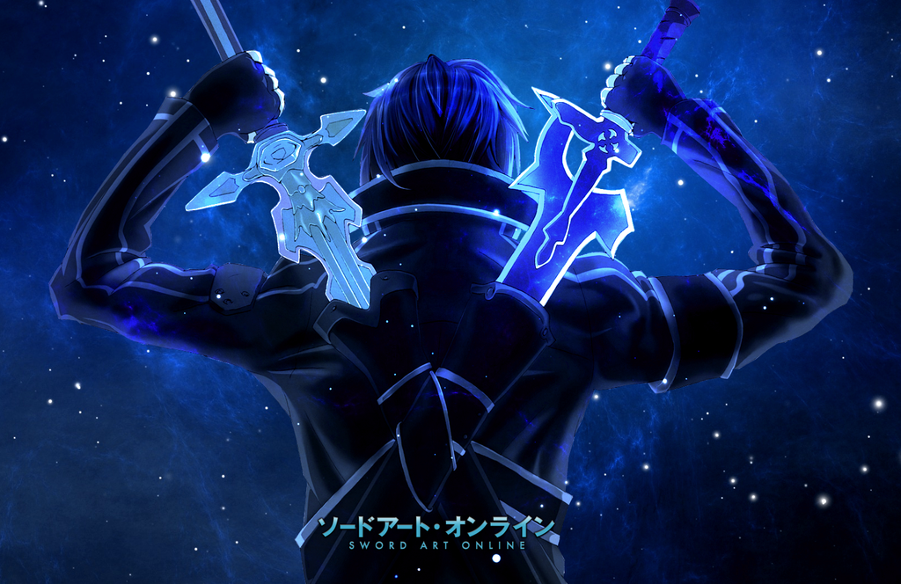
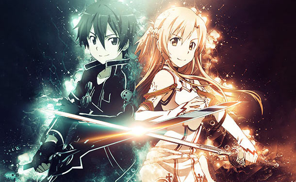

Histoire et univers du manga



Sword Art Online (SAO).Sword Art Online est un jeu de rôle en ligne massivement multijoueur en réalité virtuelle (VRMMORPG), sorti en 2022. Avec le NerveGear, un casque de réalité virtuelle stimulant les cinq sens de l'utilisateur, les joueurs peuvent contrôler leur personnage dans le jeu avec leur esprit. Le jeu est bêta-testé par des joueurs puis est enfin commercialisé. Le 6 novembre 2022, plus de 10 000 joueurs se connectent au jeu pour la première fois, et découvrent plus tard qu'ils sont incapables de se déconnecter. Ils sont ensuite informés par Akihiko Kayaba, le créateur de SAO qu'ils doivent atteindre le 100e palier de la tour du jeu et vaincre le boss final pour être libres. Cependant, si leurs avatars meurent dans le jeu, leurs corps mourront aussi dans le monde réel. L'un de ces joueurs est Kazuto Kirigaya, connu alors sous le pseudonyme de « Kirito ». Ce dernier avait été choisi comme l'un des 1 000 bêta-testeurs de la bêta fermée. Comme il avait de l'expérience et la connaissance du jeu, il sentait qu'il pouvait finir le jeu facilement. En conséquence, il s'est mis à jouer en tant que joueur solo. Lors du premier jour, 213 personnes meurent car leurs proches tentent de débrancher le NerveGear malgré les avertissements qui apparaissent à l'écran. Et durant le premier mois, plus de 2 000 personnes meurent, soit en étant tuées dans le jeu, soit car le corps réel n'a pas été transporté à l'hôpital. En effet, le NerveGear intercepte toutes les sensations et la faim, soif ou sommeil d'un joueur dans le jeu n'a rien à voir avec l'état réel de son corps qui est dans un état similaire au coma